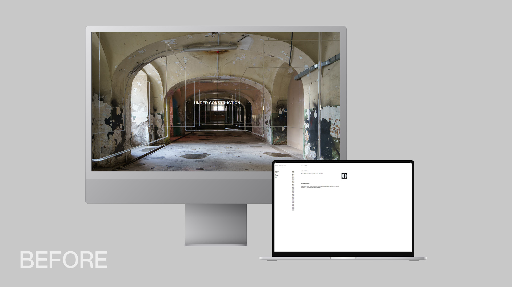
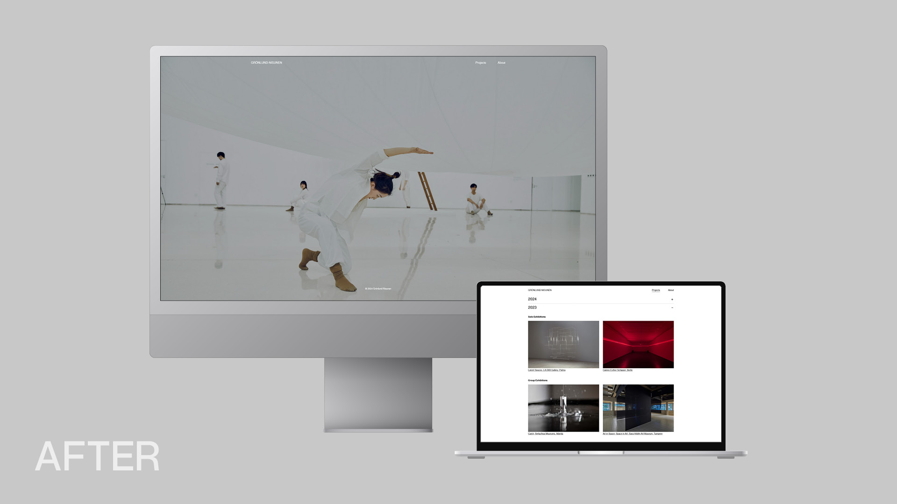
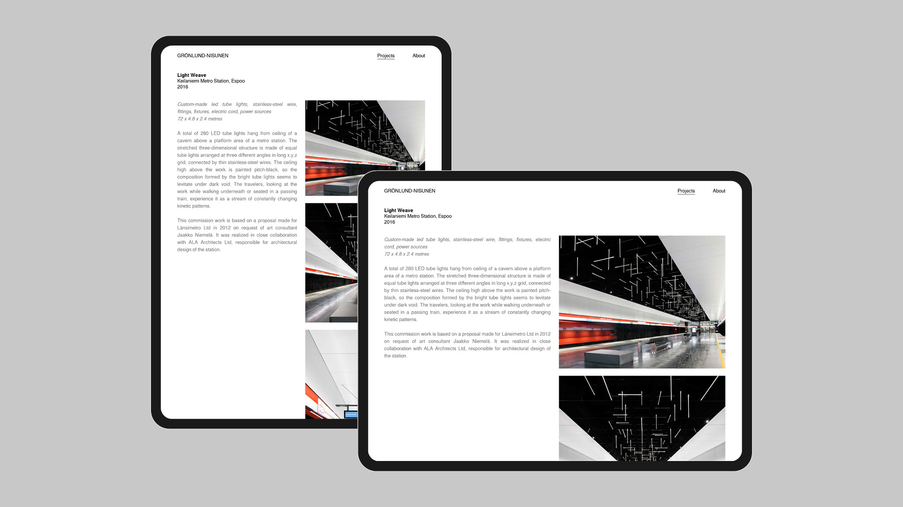
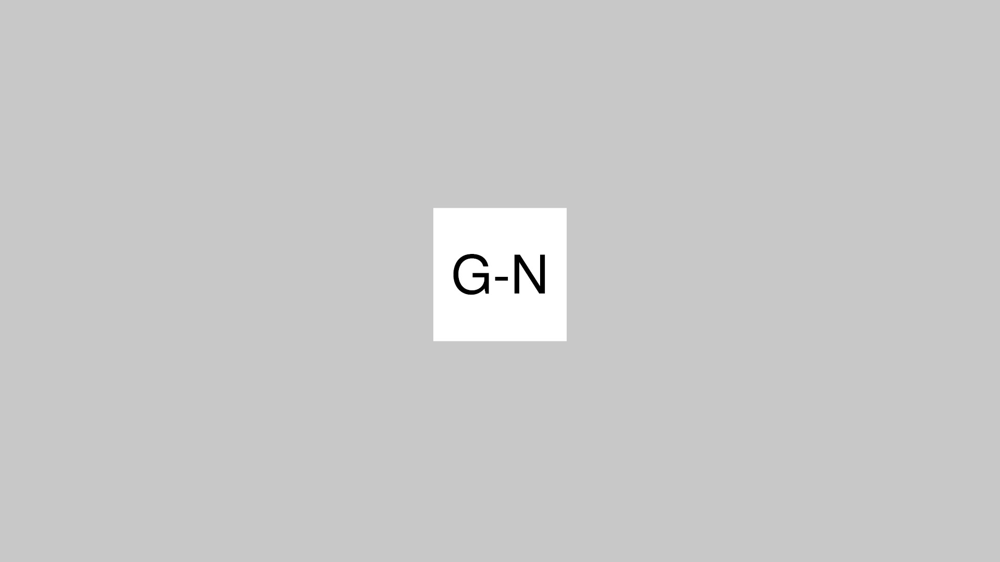

g-n.fi
Redesign and development of the artists’ website: g-n.fi
When I started this project in summer 2023, the old website’s content had not been updated for three years,
and its design has remained the same since its creation 20 years ago. My main task was to make the website
responsive for mobile devices and to improve usability while maintaining its minimalistic visual appearance. I
built the new website from scratch without any frameworks.


Redesign & Development
The accordion design offered a space-saving solution to list the artists’ career spanning over 30 years with
more than 120 documented exhibitions and public commissions. Furthermore, I created a responsive design for
different screen sizes. The mobile version has only one column where pictures are arranged below the texts.
The design of the website on tablets and desktop devices has two columns with sticky text elements on the left
column. This design offers a clear separation of text and pictures and promotes legibility. For the front
page, I created a slideshow of outstanding images and videos of the artists’ latest works.
Other tasks included formatting over 150 images into web-ready files (optimised JPEGs with a maximum size of
200 KB), editing the texts provided by the client, embedding vimeo videos, and designing a logo for the
website’s favicon.


Year
2024
Type
Web Design and Development
Client
Grönlund-Nisunen
Software
Visual Studio Code (HTML, CSS, JavaScript)
Adobe XD
Photoshop
Illustrator